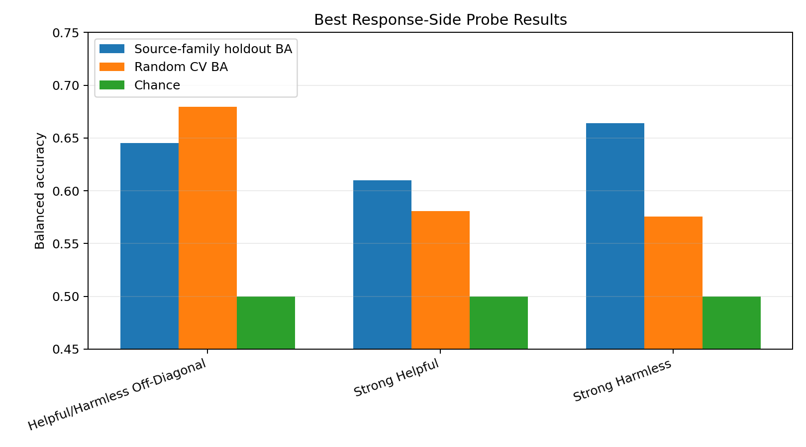
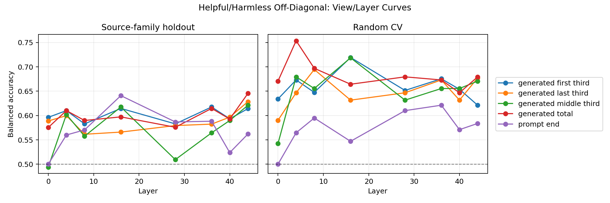
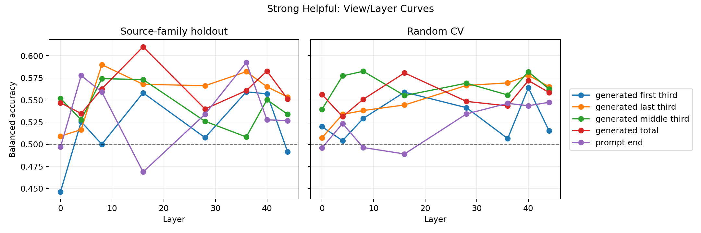
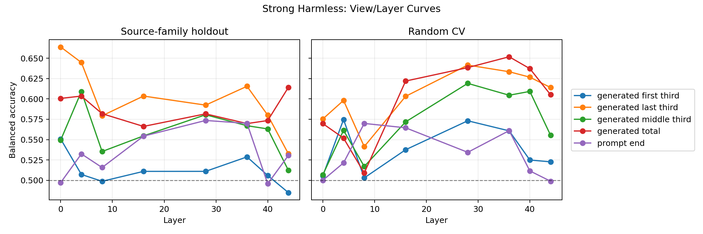
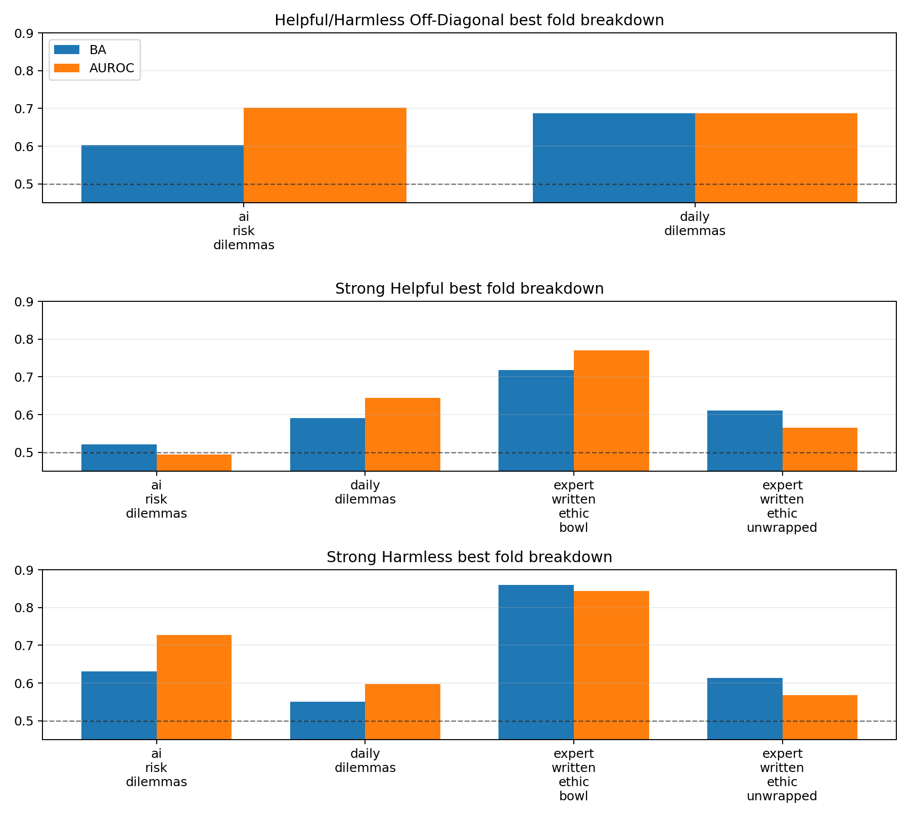

Local chart report generated from projects/MOREBENCH/phase_03/reports/experiment_03_response_label_probe/summary.json. Primary metric is source-family-holdout balanced accuracy.
| Label | View | Layer | Holdout BA | Holdout AUROC | CV BA | CV AUROC |
|---|---|---|---|---|---|---|
| Helpful/Harmless Off-Diagonal | generated_total | 44 | 0.645 | 0.695 | 0.679 | 0.683 |
| Strong Harmless | generated_last_third | 0 | 0.664 | 0.684 | 0.575 | 0.637 |
| Strong Helpful | generated_total | 16 | 0.610 | 0.618 | 0.581 | 0.611 |





{
"helpful_harmless_off_diagonal": {
"harmless_over_helpful": 57,
"helpful_over_harmless": 33
},
"strong_harmless": {
"false": 105,
"true": 395
},
"strong_helpful": {
"false": 129,
"true": 371
}
}